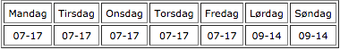

<div class="pages">
  <div data-page="abningstider" class="page navbar-fixed toolbar-fixed" >
    <div class="navbar">
      <div class="navbar-inner">
        <div class="left">
          <a href="#" class="link back icon-only"><i class="icon icon-back"></i></a>
          <!-- <a href="#" class="back link icon-only"><i class="icon icon-back"></i></a> -->
        </div>
        <div class="center">Sekretariatets åbningstider</div>
        <!-- <div class="right"></div> -->
        <div class="right">
        </div>
      </div>
    </div>
    <div class="page-content" style="padding-top:45px;">
       <div class="content-block">
          <p>I sæsonen fra den 1. april til den 31. oktober 2016:</p>
          <center></center>
          <p><b>Sekretariatet er lukket på følgende datoer.</b><br />
          10, 24 og 30. april<br />
          1, 8, 16 og 29. maj<br />
          5, 12 og 19. juni<br />
          3. 17 og 30. juli<br />
          13, 14, 27 og 28. august<br />
          4, 11 og 24. september<br />
          2, 16, 23 og 30. oktober<br />
          Der er turnering på disse datoer.</p>
          <center></center>
          <p>I vinterperioden fra den 1. november til den 28. februar:</p>
          <center></center>
          <p>Sekretariatet holder lukket 3, 4 og 21. november og mellem jul og nytår (23. dec til 1. jan)</p>
          <p><b>Her finder du sekretariatet:</b><br />
          Hornbæk Golfklub<br />
          Bøtterupvej 2 C<br />
          Havreholm<br />
          3100 Hornbæk<br />
          Tlf.nr. 49 75 95 70<br />
          email:<a href="#"> sekretariat@hornbaekgolf.dk</a></p>
        </div>
    </div>
    </div>
    </div>
  </div>
</div>
